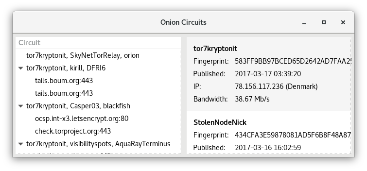

Onion Circuits displays information about the current Tor circuits and connections.
To open Onion Circuits, click on the Tor status icon in the top-right corner and choose .

The circuits established by Tor are listed in the left pane. A Tor circuit is made of three relays:
- The first relay or entry guard. If you configured Tor bridges, one of your bridges is the first relay.
- The second relay or middle node.
- The exit node.
When you connect to a destination server, for example, when visiting a website, the connection appears in the list below the circuit it uses.
In the example above, the connection to check.torproject.org goes through the relays tor7kryptonit, Casper03, and the exit node blackfish.
If you click on a circuit, technical details about the relays of the circuit appear in the right pane.